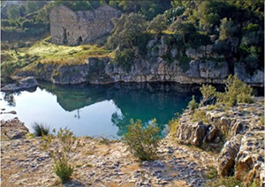

El paraje de la Fuente de Marzo, arropado por imponentes rocas grisáceas pulidas por las crecidas del río. En este pequeño lago se puede dar un chapuzón, pescar, o simplemente disfrutar de un apacible entorno con la visión al fondo de una antigua fábrica de tintes hoy en ruinas y la “Venta de Marzo”, un caserón con varios siglos de historia convertido hoy en casa rural.